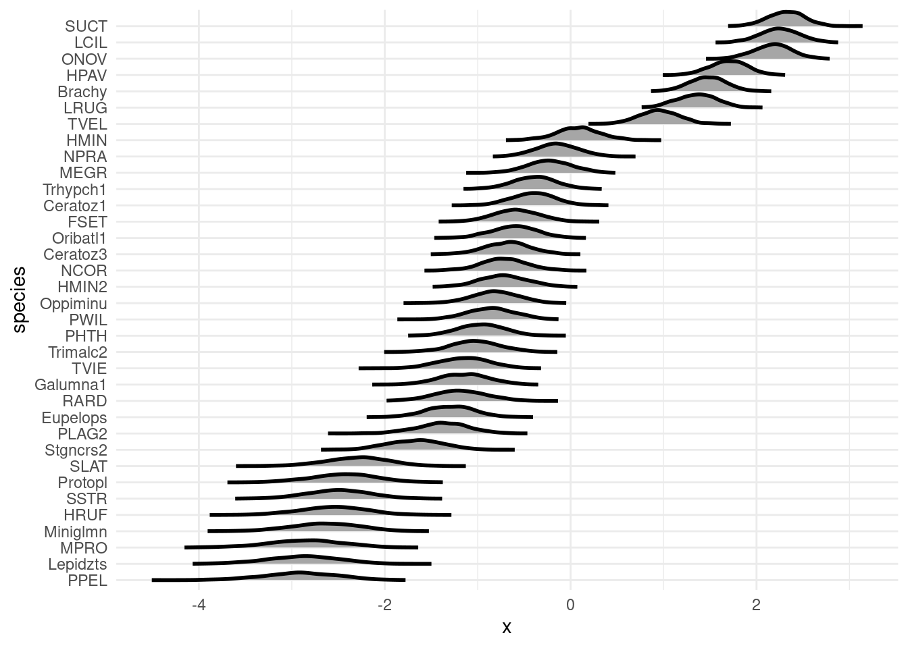
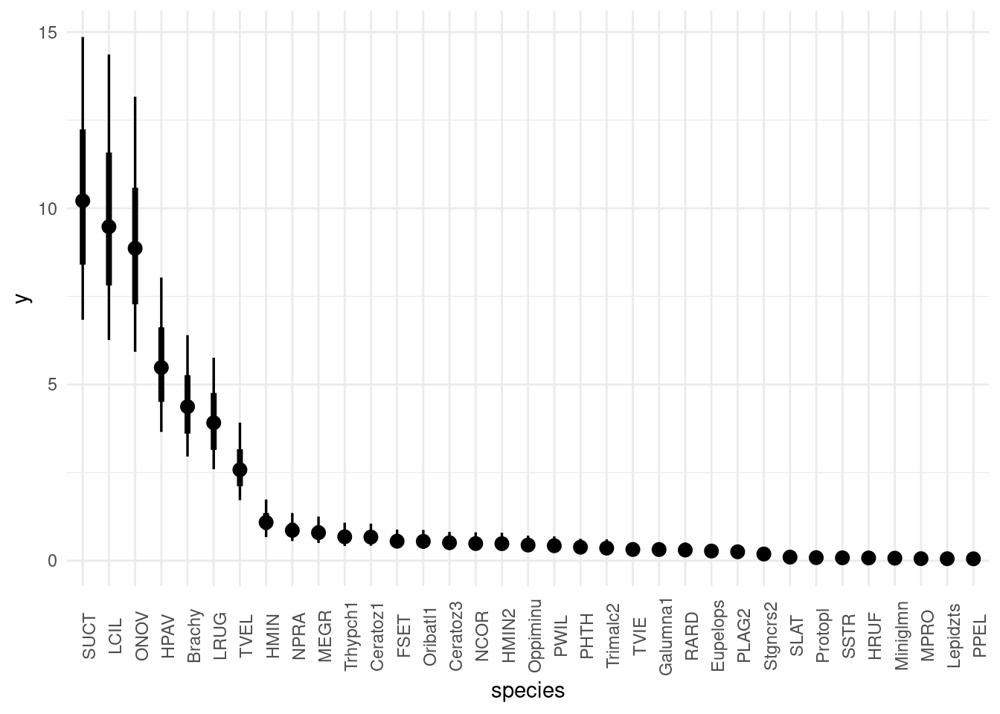

suppressPackageStartupMessages(library(dplyr))
library(ggplot2)
library(tidyr)
# library(cmdstanr)
suppressPackageStartupMessages(library(rstan))
rstan_options("auto_write" = TRUE)
options(mc.cores = parallel::detectCores())
library(tidybayes)
data("mite", package = "vegan")Fitting an intercept-only model
Where is the variation?
Variance partitioning with hierarchical models
Its very useful to have an idea of where the variation is in a dataset, as a guide to model building and future data collection. Before collecting information on independent variables that you think might explain variation – first find out how much variation there is!
Random intercepts give us a very handy way to investigate this: the so-called “intercept only” model. At this point in the course we now have all the tools needed to build it. There are two steps: first we build a model with no predictors at all, only a random intercept for every grouping variable in the data (e.g. species, sites, years, regions). Then we examine the relative magnitudes of the standard deviations to see which is relatively larger or smaller.
Abundance of mites in different samples
We’re going to build this by extending the observation level random effect model from the previous section. Remember that observation-level random effects are mostly useful for Poisson distributions! If you want to extend this model to other kinds of data, remember to remove that part of it.
Mathematical model
\[ \begin{align} \text{Abundance}_i &\sim \text{Poisson}(\lambda_i) \\ \log{\lambda_i} &\sim \mu + \beta_{\text{sample}[i]} + \beta_{\text{species[i]}} + \beta_i\\ \mu &\sim \text{Normal}(3, 1)\\ \beta_{\text{sample}} &\sim \text{Normal}(0, \sigma_{\text{samp}})\\ \beta_{\text{species}} &\sim \text{Normal}(0, \sigma_{\text{species}})\\ \beta_i &\sim \text{Normal}(0, \sigma_{\text{obs}}) \\ \sigma_{\text{samp}} &\sim \text{Exponential}(3)\\ \sigma_{\text{species}} &\sim \text{Exponential}(3)\\ \sigma_{\text{obs}} &\sim \text{Exponential}(3) \end{align} \]
Load packages and prepare data
spp_names <- colnames(mite)
spp_names <- setNames(1:ncol(mite), colnames(mite))
mite_long <- mite |>
mutate(site_id = seq_len(nrow(mite))) |>
tidyr::pivot_longer(-site_id,
names_to = "spp",
values_to = "abd") |>
dplyr::mutate(spp_id = spp_names[spp])
knitr::kable(head(mite_long))| site_id | spp | abd | spp_id |
|---|---|---|---|
| 1 | Brachy | 17 | 1 |
| 1 | PHTH | 5 | 2 |
| 1 | HPAV | 5 | 3 |
| 1 | RARD | 3 | 4 |
| 1 | SSTR | 2 | 5 |
| 1 | Protopl | 1 | 6 |
spp_site_obs_intercepts <- stan_model(
file = "topics/intercept_only/spp_site_obs_intercepts.stan",
model_name = "spp_site_obs_intercepts")
spp_site_obs_interceptsS4 class stanmodel 'spp_site_obs_intercepts' coded as follows:
data{
int N;
int N_spp;
array[N] int<lower=1,upper=N_spp> spp_id;
int N_sites;
array[N] int<lower=1,upper=N_sites> site_id;
array[N] int abd;
}
parameters{
vector[N_spp] spp_effects;
vector[N_sites] site_effects;
vector[N] obs_effects;
real mu;
real<lower=0> sigma_spp;
real<lower=0> sigma_sites;
real<lower=0> sigma_obs;
}
model {
abd ~ poisson_log(mu + spp_effects[spp_id] + site_effects[site_id] + obs_effects);
spp_effects ~ normal(0, sigma_spp);
site_effects ~ normal(0, sigma_sites);
obs_effects ~ normal(0, sigma_obs);
mu ~ normal(3, 1);
sigma_spp ~ exponential(3);
sigma_sites ~ exponential(3);
sigma_obs ~ exponential(3);
} Now we can sample this model.
Warning: irresponsible statistics
I’m sampling only 2 chains below, for illustration purposes only! use more chains in your research.
spp_site_obs_intercepts_samp <- rstan::sampling(
spp_site_obs_intercepts,
data = list(
N = nrow(mite_long),
N_spp = max(mite_long$spp_id),
spp_id = mite_long$spp_id,
N_sites = max(mite_long$site_id),
site_id = mite_long$site_id,
abd = mite_long$abd
),chains = 2)Warning: Bulk Effective Samples Size (ESS) is too low, indicating posterior means and medians may be unreliable.
Running the chains for more iterations may help. See
https://mc-stan.org/misc/warnings.html#bulk-ess# spp_site_obs_intercepts_samp$save_object("topics/intercept_only/spp_site_obs_intercepts.rds")Exploring the model output
The output is large, so rather than showing all the parameters, I’m just going to count them.
nrow(summary(spp_site_obs_intercepts_samp)$summary)[1] 2560nrow(mite_long)[1] 2450We have fit many more parameters than observations! However, this model fits just fine, with no divergent iterations. These are one indication (not the only one!) that the model fit OK:
rstan::check_divergences(spp_site_obs_intercepts_samp)0 of 2000 iterations ended with a divergence.Let’s view the summary of only the standard deviations of the random effects (sigma):
## let's look at the variance components
summary(spp_site_obs_intercepts_samp,
pars = c("sigma_spp", "sigma_sites", "sigma_obs"))$summary mean se_mean sd 2.5% 25% 50%
sigma_spp 1.513166 0.004749641 0.18336337 1.2044293 1.3817952 1.4972476
sigma_sites 0.612151 0.002572284 0.07364724 0.4821773 0.5603805 0.6076508
sigma_obs 1.487842 0.001963146 0.04230470 1.4077245 1.4589404 1.4871549
75% 97.5% n_eff Rhat
sigma_spp 1.6277827 1.9250226 1490.4024 0.9993863
sigma_sites 0.6597966 0.7656913 819.7378 1.0000013
sigma_obs 1.5157333 1.5750115 464.3785 1.0048531And we can plot them also:
bayesplot::mcmc_areas(spp_site_obs_intercepts_samp,
regex_pars ='sigma',
border_size = 0.5)
Alternatively we can pull out posterior samples and make this figure ourselves:
sigma_post <- rstan::extract(spp_site_obs_intercepts_samp,
pars = c("sigma_spp", "sigma_sites", "sigma_obs"))
sigma_post_df <- posterior::as_draws_df(sigma_post)
sigma_post_df |>
pivot_longer(starts_with("sigma"),
names_to = "sigma",
values_to = "value") |>
mutate(sigma = forcats::fct_reorder(sigma, value)) |>
ggplot(aes(y = sigma, x = value)) +
stat_dots()Warning: Dropping 'draws_df' class as required metadata was removed.
This can be a useful guide to future model building – perhaps collecting data on species traits would help to improve a model’s predictive power.
Calculate the posterior distribution of average abundance for each species
We can conceptualize this as a kind of “averaged rank abundance plot” for the species.
To do this we need to extract the average \(mu\) and add it to the species effects, \(\beta_{\text{species}}\)
spp_mu_rvars <- spp_site_obs_intercepts_samp |>
tidybayes::spread_rvars(mu, spp_effects[spp_id])spp_effect_df <- spp_mu_rvars |>
mutate(spp_avg = mu + spp_effects,
species = names(spp_names)[spp_id],
species = forcats::fct_reorder(species, spp_avg))
spp_effect_df |>
ggplot(aes(dist = spp_avg, y = species)) +
tidybayes::stat_slab(col = "black") +
# coord_flip() +
theme_minimal()
spp_effect_df |>
mutate(spp_avg_count = exp(spp_avg),
species = forcats::fct_reorder(species, spp_avg, .desc = TRUE)) |>
ggplot(aes(dist = exp(spp_avg), x = species)) +
tidybayes::stat_pointinterval() +
# coord_flip() +
theme_minimal() +
theme(axis.text.x = element_text(angle = 90))
